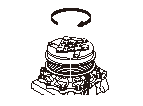
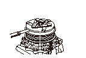
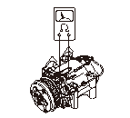
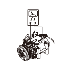

A/Cコンプレッサ クラッチの点検
アーマチュアの表面塗装部に変色、ハダあれ、外傷がないか点検する。不具合時は、
クラッチ セットを交換する。
ロータ プーリを回転させ、ベアリングのガタ、引っかかりがないか点検する。不具合時は、
クラッチ セットを交換する。

アーマチュア（A）とロータ プーリ（B）とのすき間は、ロータ プーリを回転させながら全周にわたって、シックネス ゲージで測定する。
すき間の調整は、アーマチュアを取外し、シム（0.1、0.2、0.4、0.5mm）を組み合わせて行う。
すき間:
0.35-0.65mm

サーマル プロテクタとフィールド コイルのコネクタの接続を外し、サーマル プロテクタの端子間の導通を点検する。導通がない場合は、
サーマル プロテクタを交換する。

フィールド コイルの端子とコンプレッサの本体にサーキット テスタを当て抵抗を測定する。標準値から外れている場合は、
フィールド コイルを交換する。
標準値:
3.15-3.45Ω （20°C）
